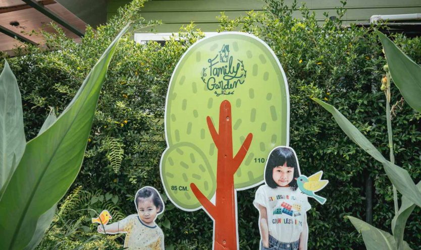
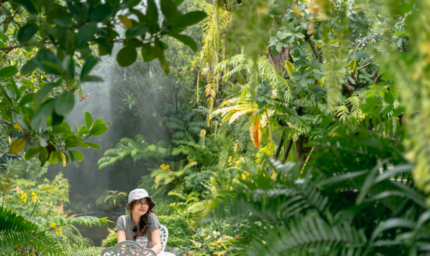
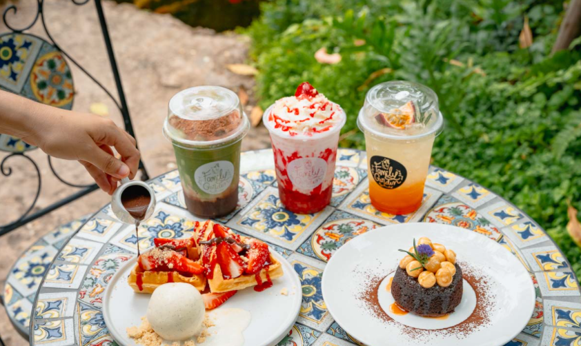
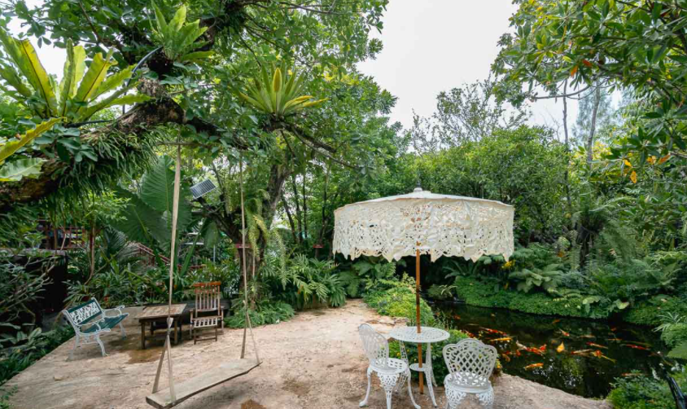
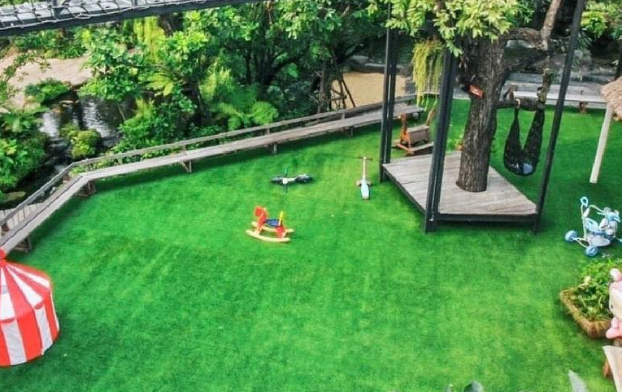

<div class="container" fxLayout="column" fxFlex>
    <mat-card fxFlex fxLayout="column">
        <mat-toolbar color="primary" style="height: 100px;">
            <span class="text-page"><strong>Family Garden</strong></span>
        </mat-toolbar>
        <div fxLayout="row" fxLayoutAlign="center center" fxFlex>
            <div fxFlex="50" fxLayout="column">
                <mat-card fxLayoutAlign="center center"></mat-card>
            </div>
            <div fxLayout="column" fxFlex="50">
                <div fxFlex="25" fxLayout="row">
                    <mat-card></mat-card>
                    <mat-card></mat-card>
                </div>
                <div fxFlex="25" fxLayout="row">
                    <mat-card></mat-card>
                    <mat-card></mat-card>
                </div>
            </div>
        </div>
        <div fxLayout="column" fxFlex="50">
            <mat-card>
                <div fxLayout="column">
                    <mat-toolbar color="primary">
                        <span><strong>รายละเอียดเกี่ยวกับค่าเฟ่</strong></span>
                    </mat-toolbar>
                    <div>
                        <p><strong class="detail-Pros">จุดเด่น</strong></p>
                        <p>
                            ปิดท้ายกันที่ร้าน'Family Garden' ร้านของบล็อกเกอร์ตัวจิ๋วอย่างน้องจินกับน้องเรนนี่
                            คาเฟ่แห่งนี้ถูกออกแบบมาในสไตล์สวนสวยและหลากหลายโซน
                            มีพื้นที่รองรับมากมายพร้อมทั้งที่จอดรถอย่างกว้างขวาง
                            สำหรับโซนยอดฮิตที่ทุกคนมาแล้วต้องห้ามพลาดเลยก็คือ โซนริมน้ำ โซนเรือนไทย โซนน้ำตก
                            และจุดไฮไลท์สำคัญของที่นี่ คือ สกายวอร์คที่สามารถเดินขึ้นไปชมวิวสวนสวยรอบๆได้แบบ 360
                            องศากันเลยทีเดียว สำหรับเมนูแนะนำที่ใครมาแล้วต้องสั่ง อาทิ ไก่ทอดซอสส้ม
                            ข้าวผัดน้ำจิ้มแจ่วแซลมอนย่างค่ะสำหรับใครที่อยากจะซื้อของฝากติดไม้ติดมือกลับไปฝากคนที่บ้านที่Family
                            Gardenก็มีจำหน่ายในช็อปLittle
                            monsterหรือว่าจะเป็นบราวนี่จินเองและผัดดองยางดาก็มีจำหน่ายโดยไม่ต้องพรีออเดอร์ด้วยนะคะ
                        </p>
                    </div>
                    <div>
                        <p><strong class="detail-Pros">วันเวลา เปิด-ปิด</strong></p>
                        <p>
                            เปิดวันจันทร์-อาทิตย์ 10.00-18.00 น.
                        </p>
                    </div>
                    <div>
                        <p><strong class="detail-Pros">เบอร์โทรติดต่อ</strong></p>
                        <p>
                            099-2463464
                        </p>
                    </div>
                    <div>
                        <p><strong class="detail-Pros">ตั้งอยู่ที่</strong></p>
                        <p>
                            36 หมู่ที่ 9 ตำบล สามพราน อำเภอสามพราน นครปฐม
                        </p>
                    </div>
                    <div>
                        <p><strong class="detail-Pros">Map Location</strong></p>
                        <button mat-raised-button color="accent" (click)="openMap()">Open Google Map</button>
                    </div>
                </div>
            </mat-card>
        </div>
    </mat-card>
</div>